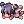

Arcade Games
Arcade Games
Have some spare time during the Festival? Of course not! But you have got to make some time to play games in the Arcade with your friends!
You might even get a high score!
Plushie Claw
Everyone likes dolls, right?
Move the Plushie Claw through the grid to catch rewards!
Hints of the quality of the rewards will be shown above your head!
At the beginning of the game, you can choose how many moves you would like to pay for.
| Plushie Claw Machine Hats | ||||
|---|---|---|---|---|
 Zaha Doll Hat Zaha Doll Hat
|
Lady Tanee Doll | Alice Doll | Incarnation Of Morocc Doll |  Drooping Neko Crew Drooping Neko Crew
|
| Drooping Alicel | Drooping Boto | Drooping Aliot | Drooping Kiehl |  Little Angel Doll |
Monster Trivia
How well do you know the world of Ragnarok Online?
At the beginning of each round, a random monster will appear on display.
In order to win, you have to guess their size, race or element correctly!
Each round is timed, running out of time will result in a loss.
Number Wizard
Do you think you have mind-reading ablities?
Guess the number between 1 and 100!
The machine will give you hints whether the number is lower or higher than your previous guess.
At the beginning of the game, you can choose how many tries you would like to pay for.
Patch Notes Parser
Are you a NovaRO expert?
Test your reading ablity by counting the number of letters found inside random patch note sentences!
Monster Mash
Spell yourself to victory!
Unscramble the letters to spell out one of the monsters' name found in Ragnarok Online!
In order to succeed, you have to use every letter given by the Machine.
See Also
| Summer Festival | ||
|---|---|---|
| General | Frying Dutchman • King's Grotto • Summer Concert • Hooligan • Summer Tablet • Festival Hat Recolors • Summer Shops | |
| Games | Multiplayer Games • Singleplayer Games • Arcade Games • Frenzy Mode | |
| Activities | Digging • Fishing Tournament • Summer Foraging • Summer Cooking | |